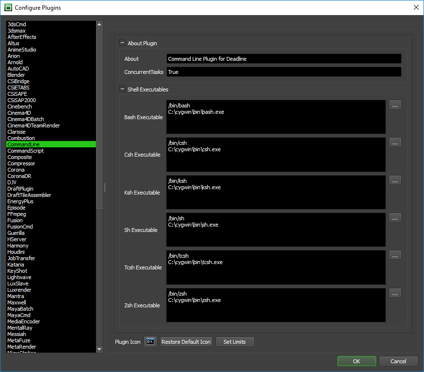

Command Line¶
Note
This plugin is deemed a potential security risk because it allows users to submit arbitrary Command Line applications to Deadline, which are then executed on the render nodes. Customers are encouraged to read the AWS Thinkbox Deadline Shared Responsibility Model before using this plugin in their environment.
Job Submission¶
Arbitrary command line jobs can be submitted to Deadline that will execute the same command line for each frame of the job.
To submit arbitrary command line jobs, refer to the Manual Job Submission documentation. To submit from the Monitor, refer to the documentation below.

Submission Options¶
The general Deadline options are explained in the Job Submission documentation. The Command Line specific options are:
Job Type: Choose a normal job or maintenance job. A normal job will let you specify an arbitrary frame list, but a maintenance job requires a start frame and an end frame.
Single Frames Only: If enabled, the plugin will only render one frame at a time even if a single task contains a chunk of frames.
Executable: The executable to use for rendering. Must be local to the render node.
Arguments (optional): The arguments to pass to the executable. Use the Start Frame and End Frame buttons to add their corresponding tags to the end of the current arguments.
Argument Tags: See the Manual Job Submission documentation for more information on these tags.
Frame Tag Padding: Determines the amount of frame padding to be added to the Start and End Frame tags.
Execute In Shell: If enabled, the specified argument(s) will be executed through the selected shell instead of an executable.
Shell to Use: Which shell to use if you are executing in a shell.
Start Up Folder (optional): The folder that the executable will be started in. If left blank, the executable’s folder will be used instead.
Plugin Configuration¶
You can configure the CommandLine plugin settings from the Monitor. While in power user mode, select Tools -> Configure Plugins and select the CommandLine plugin from the list on the left. To get a description of each setting, simply hover the mouse cursor over a setting and a tool tip will be displayed.
Shell Executables
Only applicable when using the Execute In Shell job submission option.
Bash Executable: The path to the Bash executable. Enter alternative paths on separate lines.
Csh Executable: The path to the Csh executable. Enter alternative paths on separate lines.
Ksh Executable: The path to the Ksh executable. Enter alternative paths on separate lines.
Sh Executable: The path to the Sh executable. Enter alternative paths on separate lines.
Tcsh Executable: The path to the Tcsh executable. Enter alternative paths on separate lines.
Zsh Executable: The path to the Zsh executable. Enter alternative paths on separate lines.
Cmd Executable: The path to the Windows CMD executable. Enter alternative paths on separate lines. Although not technically a true SHELL in Windows. This executable is available for those users wishing to execute a managed process via Windows
cmd.exe.
FAQ¶
How do I handle paths in the arguments with spaces in them?
Use double-quotes around the path. For example, “T:\projects\path with spaces\project.ext”.
Can I use my preferred SHELL on Linux / macOS?
Yes, either declare the absolute path to the shell in the command list such as:
/bin/sh argsor ensure the environment variable $SHELL is set correctly at execution time.
How can I report % progress of the task?
The CommandLine plugin ships with a basic StdOut handler to report progress based on StdOut from the executable you are using. You can customize this StdOut handler in the CommandLine.py plugin file to your needs or create additional ones. The default regular expression based handler expects to see StdOut with the syntax:
Progress: 10% Progress: 22% Progress: 33% ...
Do I need to use the <QUOTE> tags?
These are only needed when submitting manually from the command line. When using the Monitor submitter, you can just type in the double-quote character in the Arguments field.
Can I execute (Load-Once) a bash/bat/cmd line once on each of my Deadline Workers?
Yes. Select Maintenance as the Job Type.
Is a file extension required for the executable in Windows OS based Command Line jobs?
Yes. Ensure you enter a full, valid file path to the executable you wish to use. For example;
c:\python310\pythonwill fail, butc:\python310\python.exewill work on Windows OS.

{kind=link}